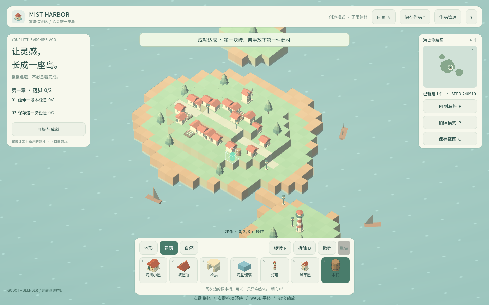
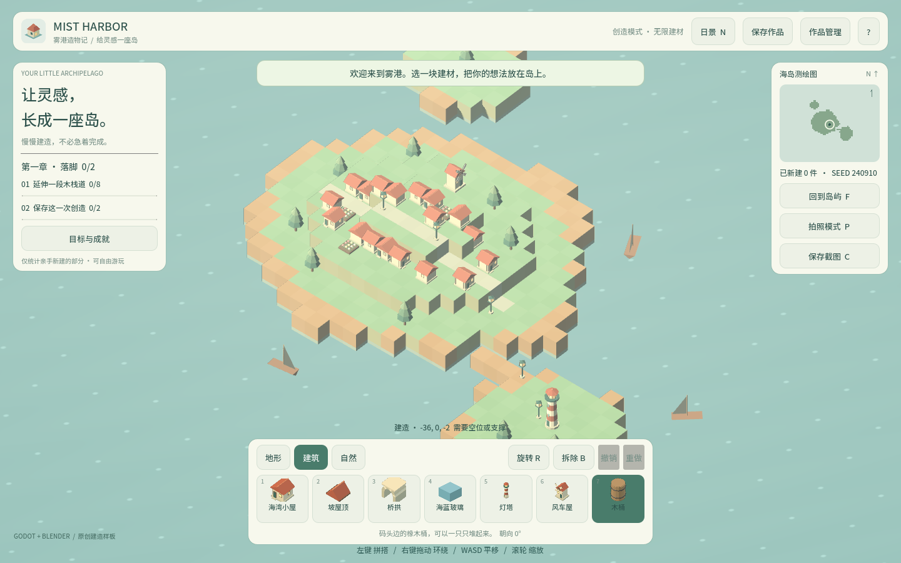

卷 6 · 第 31 章 断言演变史：三条"写死数量"的断言是怎么救了项目的
本章目标：从真实翻车记录里学断言设计——
为什么"断言数量"是坏味道，正确做法是从单一数据源推导。
对应任务：T46（回归修复） | 对应文件：test_world.gd/smoke_scene.gd/browser_smoke.py
16.1 事故：加了一件资产，三处测试同时变红
本实训接入第一件新资产（木桶 barrel）后，跑了全套测试，结果是：
| 断言 | 原文 | 症状 |
|---|---|---|
| --- | --- | --- |
| L1 | check(model.palette.size() == 13, "13 buildable materials") | 建材变成 14 → 红 |
| L2 | check(scene.world.scenes.size() == 8, "all Blender GLBs imported") | GLB 变成 9 → 红 |
| L3 | check("8 actual Blender GLB modules loaded", len(assets) == 8) | 同上 → 红（一次跑出 20/23） |
这不是"资产加错了"，而是"断言写错了"。
三条断言都在说同一件事：数量必须等于我上次数的那个数。
但数量本来就该随 palette.json 变化——断言却把它钉死了。
16.2 修法：让断言从数据源推导
# test_world.gd
var palette_file = JSON.parse_string(FileAccess.get_file_as_string("res://data/palette.json"))
var expected_materials = palette_file.get("items", []).size()
check(model.palette.size() == expected_materials and expected_materials > 0,
"palette matches data/palette.json")# smoke_scene.gd
for item in palette.get("items", []):
if str(item.get("mesh", "cube")) != "cube":
expected_models += 1
check(scene.world.scenes.size() == expected_models, "all Blender GLBs imported")# browser_smoke.py
def expected_model_count() -> int:
palette = json.loads((PROJECT / "data" / "palette.json").read_text(encoding="utf-8"))
return sum(1 for item in palette.get("items", []) if str(item.get("mesh", "cube")) != "cube")注意那个 and expected_materials > 0：
从文件推导有个风险——文件读失败会得到 0，断言就"假绿"了。
加一个下界保证，推导才安全。
16.3 三条经验（写进肌肉记忆）
| 原则 | 说明 |
|---|---|
| --- | --- |
| 断言语义，不断言快照值 | "建材表与 palette.json 一致" 是语义；"等于 13" 是快照 |
| 单一数据源 | 数量从 palette.json 推导，而不是在测试里再写一遍 |
| 推导要有下界 | 防止读文件失败导致 0 == 0 的假绿 |
📌 推广一下：凡是"断言一个会自然增长的数"，几乎都该改成"断言它与数据源一致"。
典型例子：建材数、模型数、成就数、章节数、按钮数。
16.4 同一类问题的另外两个变体
| 变体 | 症状 | 正确做法 |
|---|---|---|
| --- | --- | --- |
| 写死的世界尺寸 | 改了 WORLD_LIMIT 后一堆断言红 | 断言"边界外放置失败"，而不是"边界是 25" |
| 写死的存档字节数 | 换引擎版本后体积变了就红 | 断言"往返一致"（存→读→相等），不断言大小 |
本实训的存档测试正是后者：load_document(to_document()) 往返一致，
所以从 4.4 升到 4.7、体积变化时它依然稳。
16.5 那什么应该写死？
不是所有数字都坏。以下情况写死是对的：
- 规则常量：世界边界 ±25、建材上限 12000、存档 ≤4MB（这些是设计约束，变了就该红）
- 协议版本：
schema_version（变了必须人工确认） - 性能阈值：
visible_faces > 500（用来兜底"地形真的生成了"这类存在性判断）
判断标准很简单：这个数字是"约束"还是"统计"？
约束写死，统计推导。
🌩 在云端 agent（web-cb）里是什么样
| 🖥 本地路线 | 🌩 云端 agent（web-cb） | |
|---|---|---|
| --- | --- | --- |
| 断言失效的表现 | 本地跑出红色 | 云端 CI 红灯，但本地可能绿（数据源不同步） |
| 根因 | 断言写死 | 同；且云端更容易暴露"环境与本地不一致" |
| 预防 | 推导 + 下界 | 同；建议云端 CI 里加一条"数据源非空"的元断言 |
| 收益 | 加资产零改测试 | 云端批量造资产时尤其明显——一次加 5 件也不红 |
🌩 云端批量生产资产是常态（远程 Blender pilot 一次一件），
如果每条断言都写死数量，每加一件资产都要改三处测试——这在自动化流水线上是不可接受的。
16.6 常见坑速查（本章）
| 现象 | 原因 | 处理 |
|---|---|---|
| --- | --- | --- |
| 加资产后多处测试红 | 断言写死数量 | 改成从 palette.json 推导 |
| 改了边界后一堆红 | 边界写死在多处 | 断言行为（越界失败），引用常量 |
| 测试全绿但功能坏了 | 推导值是 0，假绿 | 加下界 > 0 |
| 换引擎后体积断言红 | 断言了字节数 | 改为往返一致 |
| 数据源改了测试没跟上 | 测试里复制了一份数据 | 直接读数据源 |
16.7 本章作业
- 找出本工程里三条曾经写死数量的断言，说明各自改成了什么
- 解释为什么推导时要加
and expected > 0，举一个假绿的具体场景 - 判断下列数字该写死还是推导，说明理由：① 世界边界 25 ② 建材种类数 ③ 成就总数 ④
schema_version - 在你自己的项目里找一条"写死数量"的断言，改写成推导式
🎓 教学提示（给教师 / 直播主）
- 概念锚点：约束写死，统计推导。一句话记住本章。
- 课堂演示：现场加一件资产，先跑写死版（红），再跑推导版（绿）。
- 高频误解：学生以为"断言越多越严越好"。讨论：脆弱的断言比没有断言更糟（狼来了）。
- 讨论题：测试全绿 = 没问题吗？（引出假绿与元断言）
- 批改要点：作业 3 的 ② ③ 应为推导，① ④ 应为写死。
🖼 本章图集


📹 录屏分镜（10 分钟）
| 时间 | 画面 | 解说词要点 |
|---|---|---|
| --- | --- | --- |
| 00:00–01:40 | 事故回放：加一件资产，三处变红 | "不是资产错了，是断言错了。" |
| 01:40–03:30 | 三处改法逐行看（含 mesh != cube 的计数） | "让测试去问数据。" |
| 03:30–05:00 | and > 0 的必要性：假绿演示 | "推导也要防呆。" |
| 05:00–07:00 | 三条原则 + 两个变体（往返一致） | "约束 vs 统计。" |
| 07:00–08:40 | 什么该写死的判断标准 | |
| 08:40–10:00 | 作业 + 卷 3 小结 |
🎬 视频位（待录制）
把录好的视频放到course/media/video/31/（mp4 / webm / mov），重新执行 python tools/course_build.py 即会自动内嵌；首帧默认用本章第一张截图作为封面。分镜脚本见上一节。🖼 配图清单
| 文件名 | 内容 | 生成方式 |
|---|---|---|
| --- | --- | --- |
31-barrel-in-dock.png | 木桶出现在建材栏（第 14 件建材） | python tools/course_capture.py --chapter 31 |
31-after-place.png | 放置木桶后游戏仍正常（回归已通过） | 同上 |
🎥 直播脚本（L3 片段，12 分钟）
- 开场："我写错了三条断言，但它们是好断言——因为错得很有代表性"
- 演示：现场加一件资产，看旧断言红、新断言绿
- 互动：让观众自查项目里的
== 8/== 13这类魔法数 - 收尾：卷 3 总结 + 预告卷 4（资产管线 / 卷 5 性能）
❓ 本章 FAQ
Q：推导会不会让测试变弱？
A：不会。它断言的是"实现与数据源一致"——这恰恰是最该保证的事。数量本身由数据源负责。
Q：如果数据源本身错了呢？
A：那就该有校验数据源的断言（如"每项必须有 id/name/color"）。这是另一类测试：数据校验。
Q：visible_faces > 500 不也是写死吗？
A：它是存在性阈值（证明地形真的生成了），不是精确数量。改世界尺寸时它依然成立。